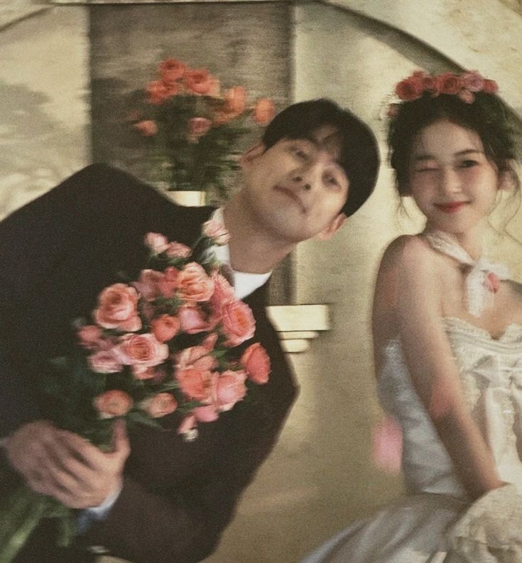

40+ Contoh Kata-Kata Undangan Pernikahan Digital

Salah satu bagian paling membingungkan saat membuat undangan adalah menyusun kata-kata undangan pernikahan yang pas. Kalimatnya harus terasa hangat, sopan, sekaligus mewakili kepribadian kalian. Di artikel ini kami kumpulkan lebih dari 40 contoh kata-kata undangan digital — mulai dari yang islami, modern, hingga simpel — yang bisa langsung kamu salin dan sesuaikan.
1. Kata pembuka undangan (Islami)
Pembuka islami memberi kesan khidmat dan penuh doa. Beberapa contohnya:
"Tanpa mengurangi rasa hormat, kami mengundang Bapak/Ibu/Saudara/i untuk hadir di acara pernikahan kami. Merupakan suatu kebahagiaan dan kehormatan bagi kami apabila Anda berkenan hadir dan memberikan doa restu."
"Dengan memohon rahmat dan ridho Allah SWT, kami bermaksud menyelenggarakan pernikahan putra-putri kami. Suatu kebahagiaan bagi kami atas kehadiran serta doa restu Anda."
Banyak pasangan juga menyertakan kutipan QS. Ar-Rum ayat 21 tentang pasangan dan ketenteraman sebagai pembuka yang indah.
2. Kata-kata undangan modern & elegan
Jika kamu ingin nuansa yang lebih ringan dan kekinian:
- "Dua hati, satu cerita. Kami mengundangmu untuk menyaksikan awal dari selamanya kami."
- "Kami menemukan rumah dalam diri satu sama lain. Jadilah bagian dari hari bahagia kami."
- "Sebuah janji akan diucapkan, dan kami ingin kamu ada di sana untuk menjadi saksinya."
3. Kata-kata undangan simpel
Singkat, jelas, tetap manis — cocok untuk dibagikan cepat lewat WhatsApp:
- "Dengan bahagia, kami mengundangmu di hari pernikahan kami. Kehadiranmu sangat berarti."
- "Save the date! Kami akan menikah dan ingin merayakannya bersamamu."
- "Satu link, satu undangan, sejuta bahagia. Klik untuk melihat undangan kami."
4. Ucapan penutup untuk tamu
Akhiri undanganmu dengan kalimat yang menyentuh:
"Merupakan suatu kehormatan dan kebahagiaan bagi kami apabila Bapak/Ibu/Saudara/i berkenan hadir serta memberikan doa restu. Atas kehadiran dan doanya, kami ucapkan terima kasih."
5. Quote cinta untuk halaman undangan
Sebuah kutipan singkat bisa membuat undangan terasa lebih puitis:
- "Dan di antara tanda-tanda kekuasaan-Nya, Dia menciptakan untukmu pasangan dari jenismu sendiri..." — QS. Ar-Rum: 21
- "Two souls with but a single thought, two hearts that beat as one." — John Keats
- "Bersamamu, setiap hari terasa seperti rumah."
Tips menulis kata-kata undangan
- Sesuaikan dengan tema. Undangan klasik cocok dengan bahasa yang hangat; undangan modern bisa lebih ringan.
- Jangan berlebihan. Kalimat yang sederhana namun tulus justru lebih berkesan.
- Periksa nama & gelar. Pastikan ejaan nama mempelai dan orang tua benar.
- Tambahkan sentuhan personal. Satu kalimat tentang kisah kalian membuatnya lebih istimewa.
Ingin kata-katamu tampil cantik dalam undangan digital?
Lavelle merangkai kalimatmu menjadi undangan digital yang elegan — lengkap dengan RSVP, galeri, dan buku ucapan.
Lihat Demo Konsultasi GratisBaca juga: Tips Memilih Undangan Pernikahan Digital yang Tepat.